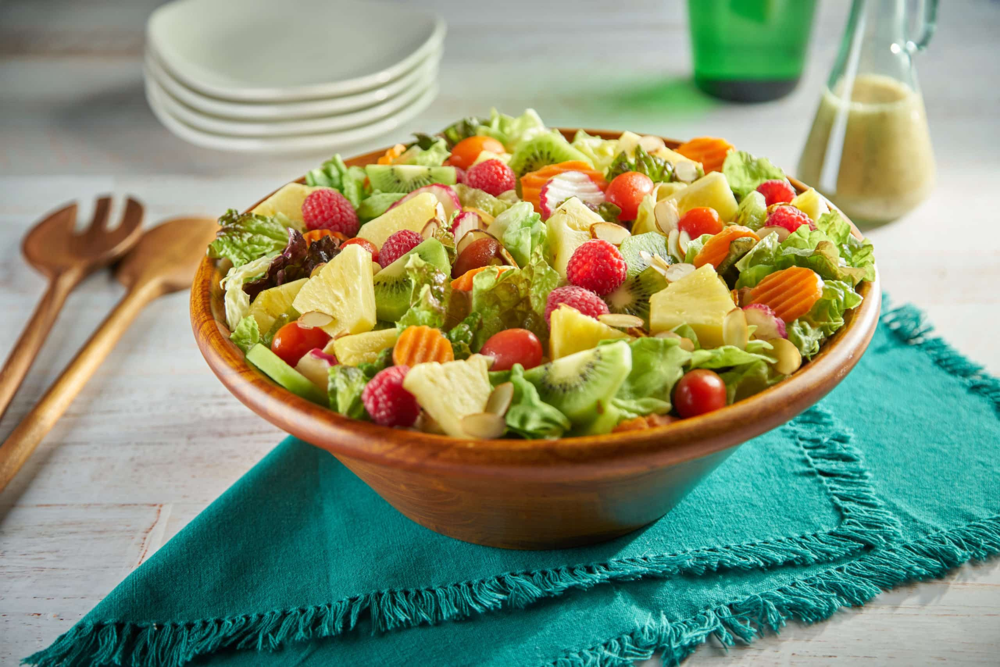

Grace's Garden Salad

"Blossoms of Flavor: Grace's Garden Salad at The Garrison Tavern."
Indulge in a garden-inspired masterpiece. Grace's Garden Salad is a symphony of fresh, crisp greens, vibrant garden vegetables, and a drizzle of homemade dressing. A burst of colors and flavors that's as delightful as a stroll through an English garden.
Ingredients:
- Mixed salad greens (lettuce, arugula, spinach, etc.)
- Cherry tomatoes
- Cucumber slices
- Carrot ribbons
- Radish coins
- Red onion rings
- Crumbled feta cheese
- Toasted pine nuts
- Fresh basil leaves
- Homemade balsamic vinaigrette
Recipe Instructions:
- Prepare the Greens:
- Wash and dry the mixed salad greens, then arrange them on a serving platter.
- Add the Freshness:
- Scatter cherry tomatoes, cucumber slices, carrot ribbons, radish coins, and red onion rings over the greens.
- Enhance with Feta and Nuts:
- Sprinkle crumbled feta cheese and toasted pine nuts for a delightful texture and flavor contrast.
- Garnish with Basil:
- Place fresh basil leaves on top of the salad for a touch of aromatic freshness.
- Drizzle with Vinaigrette:
- Just before serving, drizzle the garden salad with your homemade balsamic vinaigrette.
Enjoy Grace's Garden Salad, a vibrant and refreshing dish that brings the garden to your plate, only at The Garrison Tavern.